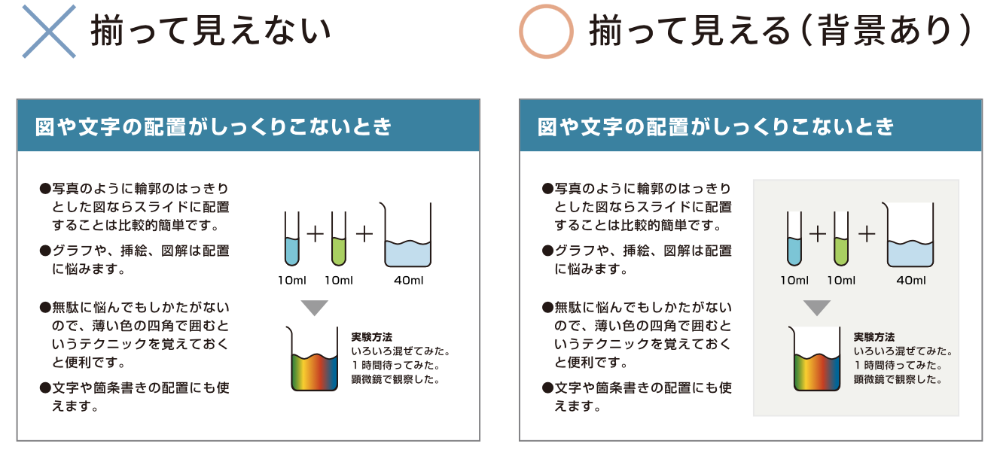

レイアウト
SEOとはsearch engine optimizerの略であり、その意味は簡単に言うとwebサイトをコンピュータにも理解できるようにするということです。一見これはなぜ必要なのか分からない人も多いと思います。しかし本章を見た後、きっとその考え方も変わるはずです。結論を言うと私たちの作ったコンテンツが正しく世界中の人々に感動を与えるために、webページは、一度クローラーと検索エンジンというプログラムを介してから検索結果に現れるということです。もしこれらのプログラムを介さなければ、せっかく作ったwebサイトは検索結果に現れず、ネットを彷徨う悲しき遺物となることでしょう。本性はそうならないための対策をメインに取り扱います。
余白をとる
◎スライドの周囲、図の周囲には余白を取る

左上のスライドの例を見てください。テキストと図の高さが揃っているのはよいのですが、赤い三角をつけた部分にスペースが少なすぎます。これでは、とても窮屈で、非常に読みにくいスライドになります。では、余白はどのように取ればいいのか、なぜ余白が重要なのかについて説明します。
余白の取り方の基本
- ・むやみに文字を大きくするのではなく、ゆとりをもって配置できるような文字サイズにする。
- ・「文字とスライドの端」、「文字と文字」、「文字と図」の間にはしっかりとスペースを空ける。
余白の重要性
プロジェクターの具合によっては、スライドの端がスクリーンからはみ出てしまうこともあるので、そういった意味でも、スライドでは周囲にスペースを作ることは重要です。また、スペースが美しければ、スライドも美しくなります（左上のスライド参照）。スライドの場合は、最低でも本文の文字の１文字分の余白（右下の図で薄い赤色で示したくらいの余白）を設けるようにしましょう。２文字分くらいの余白をとると、かなりゆったりした資料になり、確実に見やすくなります。研究発表では必要のないことかもしれませんが、余白が多いほどオシャレな印象になりやすいです。
*わざとデザインの面で余白を取らない場合もありますので、必ずしも余白が必要になるわけではありません。
p{
font-size: 16px;
color: #333;
}
◎余裕をもって配置する
しばしば枠の中に単語や文章を入れることがあります。このとき注意したいのは、文字と枠の間隔です。文字が枠のギリギリになってしまうと、枠の近くの文字が非常に読みにくくなります。 文字は線の要素で、枠線も線の要素であるため、互いに接近したときに干渉し合ってしあうためです。「ギリギリだけど収まったからいい」なんてことはありません。枠の中に、余裕をもって文章を配置しましょう。 では、いくつかの例を挙げて説明します。
文章を枠内に入れる場合

文章を枠内に入れる場合は、上下に１文字分ぐらい余白を確保するといいでしょう。
語句を枠内に入れる場合

語句を枠内に入れる場合は、枠は大きめにとりましょう。ちょっとしたことですが、こういった積み重ねが全体の読みやすさを大きく変えます。
具体的な例

枠の中の文字が窮屈すぎると読みにくい上に、印象もよくありません。どうしても枠を大きくできないとか、文字数を減らすことができない場合ならば、少々文字を小さくした方が読みやすいこともあります。*ちなみに、分量（行数）が少ないほど、枠内の余白は少なくてもよいです（スライド全体には１文字分の余白が必要だが、タイトル部分やフローチャートの部分は、0.5〜0.7文字分でも構わない、という意味です）。
②揃える

上のようにサイト全体を格子上に捉えることでそれぞれの要素を配置しやすくなります。それに加えて図の大きさや文章の長さなどを揃えることも印象をかなり良くします。
しかし、新聞記事のように見出しや小さな図が入る場合は、最初のようにグリッドを応用する必要があります。
body{
grid:
}
タイトルより上に中身を書かない

人は普通、左上から右下に目が動きます。そのため、左上にタイトルをつけた場合、そのタイトルに関連する内容はタイトルよりも右下にある方が読みやすくなります。決して内容をタイトルの真横やそれよりも上に書かないようにしましょう。
収まりの悪いイラストやグラフは四角で囲う
上で説明したようにサイトの要素はできるだけ位置を揃えて配置したほうが見やすくなります。しかし位置を揃えにくい要素や、位置を揃えても揃って見えない要素も存在します。具体的にはイラストやグラフなどは輪郭が曖昧なので、位置を合わせてもフワフワと余白に浮いているように見えてしまいます。このような場合は、要素の背景に薄い灰色(既存の色と同色系)の四角形などを適用すると効果的です。便利なテクニックですが「囲い・枠」が多くなると全体が煩雑になるので汎用は避けましょう。また背景色に濃い色を使うのも美しくありません。
body{
grid:
}
まとめる
レイアウトを考える際、伝えたい多くの情報をいかに分かりやすく伝えるかということは重要です。 「情報を読み解く力を付けさせる」のではなく、「情報を伝える」ということに主眼を置いた場合、 視覚的に速く情報を得られるのはユーザにとって評価に値します。 さらに多くの情報は相互に関係性を持っていることがあります。関係性がない情報と、関係性がある情報の ２種類を視覚的に分けるためには、情報同士をまとめるという方法が有効です。 以下では何種類かのアプローチから情報をまとめる方法を記述します。
(1)位置的アプローチ ー関連のある項目同士を相対的に近づけるー
ここでは情報をどこに配置するかという観点で情報を「まとめ」たいと思います。 他の情報との相対的な配置を変えることによって、関連性の強さを視覚的に明示することが出来ます。 具体的に言えば、関連性が強い情報同士は近くに配置し、関連性が低い情報同士は遠くに配置します。 以下の例のように、文章と画像で対応するもの同士を近づけることでパッと見ただけでその文章が どんな内容の話なのかがすぐ理解できます。


画像と文章、のような対応でなくてもグループ化は可能です。例えば文章と見出し、という関係の場合も、 見出しとそれに関連する文章を近づけることで関連性が視覚的に分かりやすくなります。

(2)色彩的アプローチ ー同じ色を使ってグループ化ー
ここでは情報をどんな色を用いて表すかという観点で情報を「まとめ」たいと思います。 色という視覚的な共通点や相違点を作りだすことによって、情報という内容の関連性の強さを 明示することができます。具体的にいえば、関連性が強い情報同士に同じ色を用いて、 その情報と関連性が低い情報に違う色を使います。以下の例のように、文章と画像で対応するもの同士の色を同じにすることでパッと見ただけでその文章が どんな内容の話なのかがすぐ理解できます。


このようにして、位置と色彩の観点からまとめる方法を見て、なぜ必要なのか、使うとどうなるかについて 考えてきました。他にもアプローチはありますが、今回紹介したアプローチは非常に重要なものです。